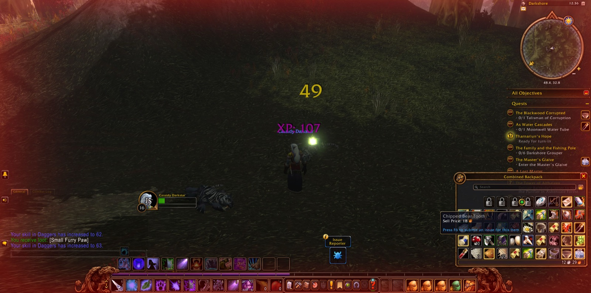
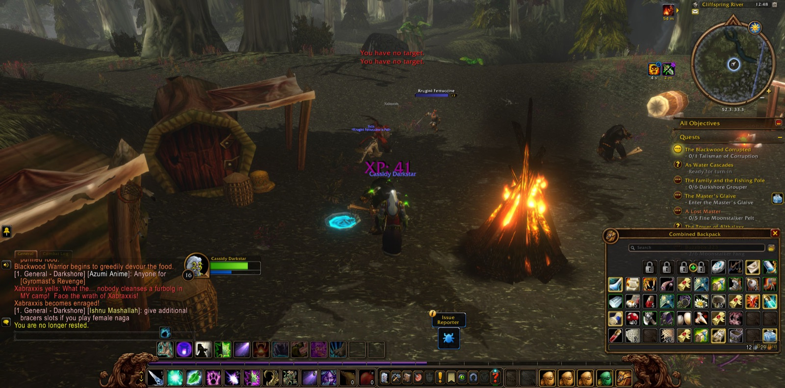

Cassidy Darkstar set out from Twilight Vale and came first to the Grove of the Ancients. There he finished his errand for Onu and took up another, concerning the Master's Glaive. The road north called to him first, though. In Ameth'Aran he fell in with other travellers: Björn the warrior, Cilantro the priest and Summerteeth the hunter, with Adoria, Nether and several more who joined him only briefly. Together they broke the seal at the ancient flame, found Anaya's Pendant and took the feather of Jai'vhanel. Cassidy carried all three back to Auberdine, and so the errands of Bashal'Aran, For Love Eternal and WANTED: Jai'vhanel came to an end.


He crossed the Veiled Sea to Rut'theran Village and walked the terraces of Darnassus, and he stopped to take a picture as he entered that city. Then he returned to Bashal'Aran, and there Rambleon the hunter joined him. Rambleon walked beside him for most of the long road that followed. At Cliffspring River the Den Mother fell, which fulfilled Tharnariun's Hope. Among the Blackwood, with Björn back at his side and Aiko, Mad and Silver keeping company, Cassidy won the Talisman of Corruption. Cassian the rogue and Tina the priest also travelled with him for a short while. Then he completed As Water Cascades, The Fragments Within and The Blackwood Corrupted, one after the other.


Next he went south to the Master's Glaive, where Twilight Disciples and Twilight Thugs stood in his way. He entered the Glaive and saw The Twilight Camp through, and Papa the priest stood with him there. After he felled a Moonstalker Matriarch he came into new strength at the seventeenth level. Fangs and fine pelts were gathered for Buzzbox 323 and A Lost Master. Then he passed into Ashenvale, to Maestra's Post and Astranaar, and so the Trek to Ashenvale was finished. The Tower of Althalaxx led him to the Ruins of Ordil'Aran for a Glowing Soul Gem, where Papa aided him once more, this time as a druid. It led him on to the Fire Scar Shrine, where the way was hard, and more than once he walked back from Astranaar before Ilkrud Magthrull fell and his Tome was taken. Karis the druid joined him near that shrine and stayed with him a long while.


At Auberdine he fished six Darkshore Grouper for The Family and the Fishing Pole. On the Zoram Strand he took twenty Wrathtail heads, and at Astranaar he rose to the eighteenth level. For Raene's Cleansing he went to Lake Falathim, and from there to the Moonwell to seek Shael'dryn. He also went back to Onu at last. Then he turned east through Nightsong Woods to the Mor'shan Rampart, where Chud the hunter kept him company for a short way. He followed the Gold Road past Honor's Stand and climbed into the Stonetalon Mountains. There he completed On Guard in Stonetalon, and at Windshear Crag he drove off the loggers and deforesters of the Venture Co. for A Gnome's Respite. At Mirkfallon Lake the Pridewings fell until he had gathered twelve venom sacs. Kancho the warrior fought beside him at the end, and Rambleon parted from him there.


Cassidy stood at last in the Stonetalon Mountains with Stonetalon Peak still ahead and letters still waiting to be delivered, and the road went on before him.




